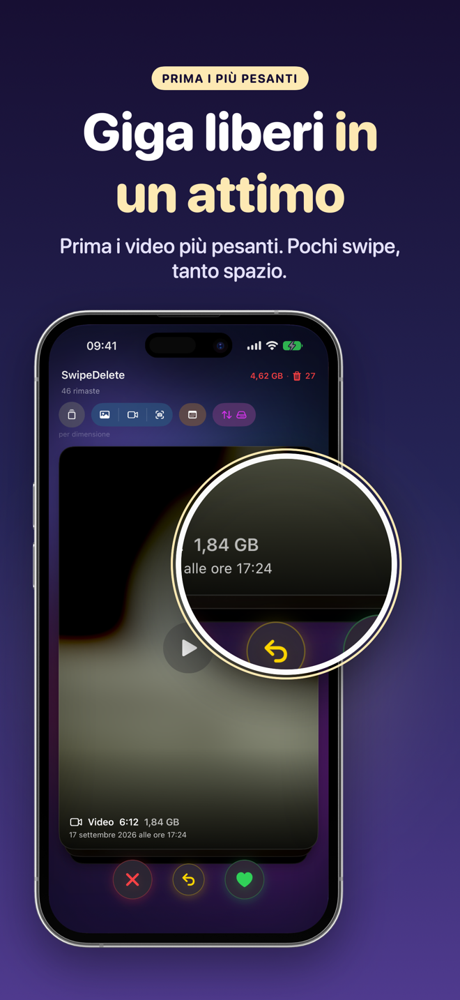

Apri Foto › Album › Tipi di media › Video e guarda la durata indicata su ogni miniatura: i video lunghi, in 4K, a 60 fps o al rallentatore sono quasi sempre i più pesanti. L'app Foto non permette di ordinare i video per dimensione, quindi per vedere subito i file più grandi serve un'app con ordinamento per dimensione.
Perché i video pesano così tanto
Una foto occupa in genere pochi MB; un minuto di video in alta risoluzione può occupare centinaia di MB. Bastano pochi video lunghi — un saggio, un concerto, una registrazione dimenticata — per occupare quanto migliaia di foto.
Trovarli con l'app Foto
- Apri Foto e vai in Album › Tipi di media › Video.
- Scorri l'elenco e cerca le durate più lunghe (indicate in basso a destra su ogni miniatura).
- Apri un video e scorri verso l'alto (o tocca ⓘ) per vedere i dettagli: risoluzione e, a seconda della versione di iOS, la dimensione del file.
- Controlla anche gli album Rallentatore e Time-lapse in Tipi di media.
- Elimina i video che non ti servono, poi svuota Eliminati di recente.
Alternative all'eliminazione
- Accorcia il video: tocca Modifica e taglia inizio e fine; tieni solo il momento importante.
- Spostalo su un computer o un disco prima di cancellarlo dall'iPhone.
- Per il futuro: in Impostazioni › Fotocamera › Registra video puoi scegliere una risoluzione più leggera per le riprese di tutti i giorni.
Come farlo con SwipeDelete
- Apri SwipeDelete e attiva il filtro Video.
- Tocca l'ordinamento e scegli per dimensione: i file più pesanti arrivano per primi, con durata e GB indicati sulla carta.
- Scorri a sinistra quelli da eliminare, a destra quelli da tenere.
- Nel cestino vedi quanto spazio stai per liberare: ripristina se serve e conferma.
È il modo per recuperare più spazio con il minor numero di swipe.
Prossimamente suApp Store
Domande frequenti
Si possono ordinare i video per dimensione nell'app Foto?
No, Foto ordina per data. Per vedere prima i file più grandi serve un'app con ordinamento per dimensione.
Quanto spazio occupa un minuto di video?
Dipende da risoluzione e frequenza: in 4K a 60 fps molto più che in 1080p a 30 fps. Le stime aggiornate sono in Impostazioni › Fotocamera › Registra video.
Eliminare un video dall'iPhone lo elimina da iCloud?
Sì, se usi Foto di iCloud. Fai una copia altrove se vuoi conservarlo.